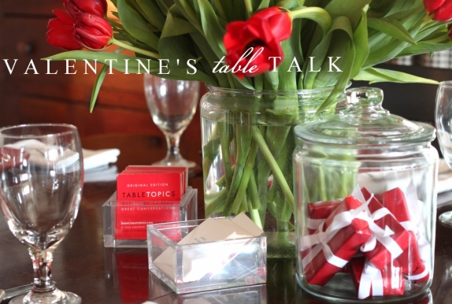
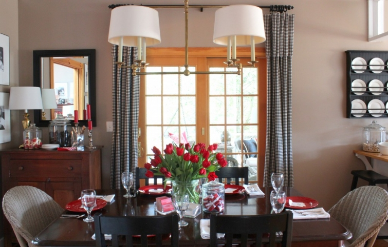

.png)
.PNG)
.PNG)
.PNG)
.PNG)
.PNG)
.JPG)
.JPG)
.PNG)
.PNG)


Well, just in case you haven’t seen enough red around here lately, I have a little more to show you. 🙂 Let’s go into the dining room first. The red is most definitely back in there.

You already know how much I love tulips, so they are the focal point of the table. I also think the Table Topic card sets are wonderful. With our crew, you are bound to get quite a variety of viewpoints on any topic of conversation. Seriously.
Amazingly, the cards fit like a glove in some random envelopes from a gift tag set I had purchased years ago at Target. I used 6 in envelopes for place cards. The rest of the set is on the table, and I wrapped up little boxes of conversation heart candy to go in the jar there.

Talk seems to be the theme of my Valentine’s Day table. Get it? Table topics…conversation hearts. 🙂 ha ha. (My camera lens had a major dust attack here, so please excuse all of it in this photo.)

The first day I bought the set of cards, we were headed out to dinner somewhere. I took them in the restaurant with us, and every time the waitress came back to check on us my husband bombarded her with another question. Poor girl! Do not take them in a restaurant if you get a set of them.

I used a red chalk pen to add a little something extra to the cereal bar. It washes off easily when I want to change it.

And have you seen this super cute bottle of water?? I had to buy it when I saw it at Fresh Market.

Here is my kitchen desk ready for Valentine’s Day.
You know how I really adore tulips? Well they show up in yet another room, too (besides the dining room…great room… our bedroom.) Take a look here in the master bathroom.

and a little closer look.
One other spot for some holiday decorating is on my daughter’s desk, but I should have never put the jar of Hershey hugs and kisses in there.
You can’t stop eating them. You think they are just a little bite of chocolate, but before you know it, you have devoured twenty!!

One last bit of decorating for Valentine’s Day here is purely sentimental. Do you see that small pack of envelopes tied up with ribbon in front of the books?
When my daughter was old enough to exchange valentines with the children at the day care she attended, I made a duplicate set of those first cards. They are kept tied with ribbon in a basket in her closet, and we take them out for a display each year in February. I think it will be something fun for her to look at when she is older and has a family of her own.
That brings us to the end of all the red decorating. Hopefully, I will be back this week with a post on Valentine’s Day gifts (but you know there will be some red in there, too. 🙂 )
See you then!


.PNG)
Hi, Kelly –
I love your decorations! All the touches of red are so warm and inviting. I love tulips and have them in vases on my mantle. They are starting to go, so I’ll be replacing them soon. Maybe I’ll go with the potted ones this time. I’ll look at Trader Joe’s next time I’m there (thanks for the tip, Karen of Garden, Home and Party!) I like the idea of keeping my home stocked with my favorite flower!
I wish I had your talent for calligraphy, Kelly, – everything just looks adorable. I am so glad I found your blog. Reading it and looking at your decorations is like taking a mini-vacation to the cutest bed and breakfast ever!
Read your post about the valentines you give your student – so wish I had thought of that when I was still teaching! The last couple of years, I gave my students little playdough containers – I think they were made to give as Valentines, but i’m not sure. I didn’t want to give my students candy, either.(If those Hershey’s Kisses were over my desk, they’d be gone in about 2 days!)
XO,
Kelly
Yum!!! It all looks wonderful. You really have remarkable style!!!! 🙂
Kelly,
Thanks for sharing your decorations with us! I do love all of the special touches you do. I am going to have to get some of those chalk pens! I could leave sweet notes for my daughter on her bathroom mirror! Have a very happy Valentine’s day!
I love tulips!!! Everything looks beautiful.
Happy Valentine’s Day!
I love your Valentine touches! Where do purchase chalk pens?
I just found out my husband booked one night at the Old Edwards Inn in Highlands for my Valentines gift. I knew you would appreciate that! Due to our schedules we aren’t going until the end of February, but that ‘s okay ’cause it gives me something to look forward to!
Happy Valentine ‘s Day!
Katrina
Just lovely! XOXOXOXOXO
Everything is super cute as always! As you, I decorate with a lot of red, so I tend to add pink hearts and things for Valentine’s Day. So fun!
What a talent you have! You take the simplest thing and make it special. I wish you could teach me your talents. Keep posting I look so forward to them.
Very sweet! Love your calligraphy on the milk bottles!
kelly,
i love all your valentine’s day decorating and your touches of red…especially those tulips! this is the first year i’ve ever done anything decorating-wise for valentine’s and i can see it will now become a tradition.
i know you must be sooo busy lately as i’ve missed seeing you around my blog. we’re off to vicksburg/natchez for a week on saturday. we took this same trip about 3 years ago and husband loved it so much we decided we’d go back for more. i’m hoping to work in a visit with an old high school friend who contacted me via FB…haven’t seen her in about 40 years (can’t believe i just admitted that)!
hope you have a wonderful valentine’s day!
Kelly,
You do have a style for those special touches. I always love to study your details for inspiration in my own home. I love tulips too. I’ve been thrilled to find them at our local Trader Joe’s for very little, I plan to keep a bouquet in our home from now until spring’s arrival.
In case you don’t have another post before the big day…Happy Valentine’s Day to you and yours.
xo,
Karen
Kelly, love all the Valentine accents! Aren’t those chalk pens great. I have a white one. I may have to try writing on dishes. Didn’t know that would work. Happy Valentine’s Day!
I love tulips too! I so enjoy all your special little touches through out your home. My bedroom is red/white check and a Williamsburg Resist fabric and to see red/white drapes in your bedroom too is fun. Hope you have a wonderful Valentine’s Day. I also follow you on Pinterest. Hope you will follow me. Marlene Wilson
I thought of you when I was arranging red tulips for my dinning room table last night. Your house looks lovely! I’m going to have to get some chalk pens. Happy Valentine’s Day!!
Very pretty!